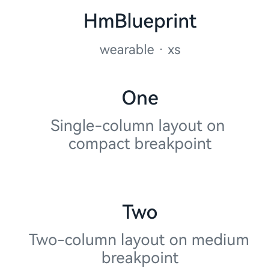
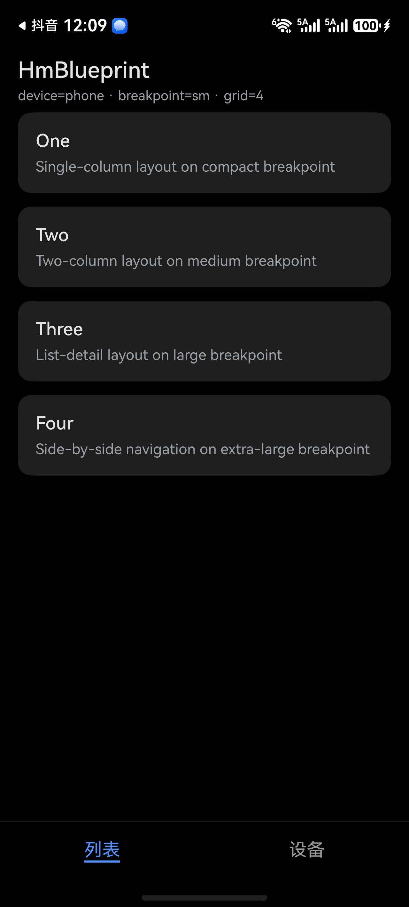
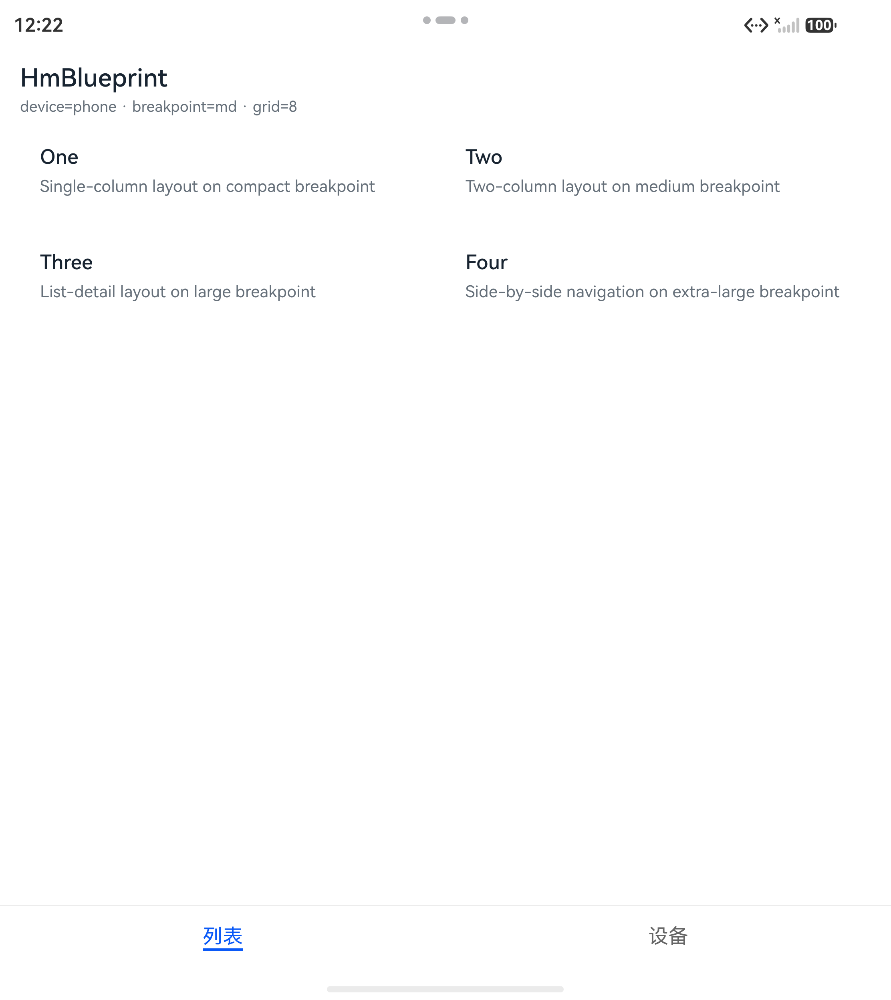
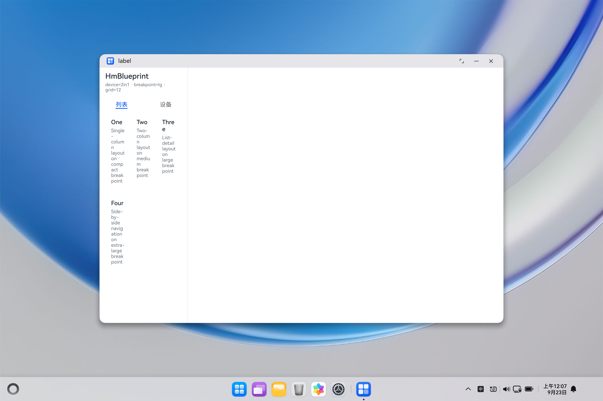

鸿蒙工程目录设计指南
基线：API 23（compatibleSdkVersion 6.1.0(23)，targetSdkVersion 26.0.0）· 状态管理 V2 · UI 组件 HDS（UIDesignKit）
配套范例工程：hm_blueprint/（模板骨架）与 hm_partynow/（实装后工程），两者结构完全一致且均已编译通过。
0. 适用范围
本指南描述一套经过实机验证的 HarmonyOS 应用工程组织方式，适用于需要同时覆盖 手机 / 平板 / 2in1 / TV / 手表 的多端应用，也适用于单设备应用（可裁剪掉多余入口模块）。
三条硬约束（本指南的所有结论都建立在其上）：
| 约束 | 内容 | 依据 |
|---|
| C1 | 同一应用、同一设备类型只允许一个 entry 类型 HAP | 官方 FAQ faqs-package-structure-28 |
|---|
| C2 | 断点阈值由平台定义，业务代码禁止硬编码像素值 | 最佳实践 bpta-multi-device-responsive-layout |
| C3 | HDS 组件有明确的设备支持矩阵，不支持时回退原生组件并登记例外 | SDK api-version/UIDesignKit.json 实测 |
1. 顶层设计原则
| 编号 | 原则 | 说明 |
|---|
| P1 | 目录名 = 模块名 = 包名 | 三者同名可消除"看到 import 不知道对应哪个目录"的认知成本 |
|---|
| P2 | 严格单向依赖 | entry → features → commons，禁止反向与跨 feature 直连 |
| P3 | 能力下沉、差异上浮 | 通用能力沉到 commons；设备/断点差异留在入口层与页面层 |
| P4 | 一个入口一个 module | 设备形态差异用 module 隔离，不用 if (deviceType) 在页面里分叉 |
| P5 | 状态管理统一 V2 | 新代码只用 V2 装饰器，禁止新增 V1 用法 |
| P6 | 样式令牌集中在 AppScope | 颜色等设计令牌放应用级资源，模块内不重复定义 |
| P7 | 可编译是底线 | 任何结构方案都必须能通过 devecocli build 并产出签名 HAP |
2. 完整目录树
以下是范例工程 hm_blueprint/ 的实测结构（hm_partynow/ 完全一致）：
hm_blueprint/
├── AppScope/ # 应用级资源与配置（全局唯一）
│ ├── app.json5 # bundleName / 版本 / 图标 / 标签
│ └── resources/
│ ├── base/element/color.json # ★ 设计令牌（浅色）
│ ├── base/element/string.json
│ ├── base/media/ # 应用图标、分层图标
│ └── dark/element/color.json # ★ 设计令牌（深色）
│
├── commons/ # 公共层：按"依赖方向 + 语义"分三段，互不越界
│ ├── foundation/ # ① 基础设施层：与 UI、与业务都无关
│ │ ├── Index.ets # ★ 模块唯一导出入口
│ │ ├── src/main/module.json5 # type: har
│ │ ├── src/main/ets/
│ │ │ ├── log/ # 日志：分级 / 结构化 / 可插拔 sink
│ │ │ │ ├── LogLevel.ets # 级别定义与语义
│ │ │ │ ├── LogSink.ets # 输出目标接口 + Console/Memory 实现
│ │ │ │ └── Logger.ets # 统一出口（禁止业务直连 hilog）
│ │ │ ├── error/ # 异常：错误码 / 错误类型 / 映射 / 全局兜底
│ │ │ │ ├── ErrorCode.ets # 错误码规范（域×10000 + 序号）
│ │ │ │ ├── AppError.ets # 唯一错误类型 + 三级严重度
│ │ │ │ ├── ErrorMapper.ets # 系统异常 → AppError
│ │ │ │ └── GlobalErrorHandler.ets # 未捕获异常兜底 + 上报接入点
│ │ │ ├── result/Result.ets # Result<T>：用返回值表达可预期失败
│ │ │ └── util/ # 纯工具：无副作用、无状态
│ │ │ ├── Assert.ets # 前置条件断言（fail fast）
│ │ │ └── MaskUtil.ets # 敏感信息脱敏
│ │ ├── build-profile.json5
│ │ ├── hvigorfile.ts # harTasks
│ │ └── oh-package.json5 # name: @blueprint/foundation
│ │
│ ├── runtime/ # ② 运行环境层：把系统能力适配成工程可用形态
│ │ ├── Index.ets
│ │ ├── src/main/module.json5 # type: har
│ │ ├── src/main/ets/
│ │ │ ├── breakpoint/ # 断点：规格 + 管理器
│ │ │ │ ├── BreakpointConstants.ets
│ │ │ │ └── BreakpointManager.ets
│ │ │ ├── theme/ColorModeManager.ets # 颜色模式
│ │ │ ├── capability/CapabilityManager.ets # 能力检测
│ │ │ ├── device/AppEnvManager.ets # API 与设备信息
│ │ │ └── compat/CompatManager.ets # 兼容性处理
│ │ ├── build-profile.json5
│ │ ├── hvigorfile.ts # harTasks
│ │ └── oh-package.json5 # name: @blueprint/runtime（依赖 foundation）
│ │
│ └── uikit/ # ③ 表现层：纯组件与动效
│ ├── Index.ets
│ ├── src/main/ets/
│ │ ├── motion/MotionSpec.ets # 动效时长/曲线常量（唯一来源）
│ │ ├── motion/MotionEffects.ets # 预置过渡效果
│ │ └── component/
│ │ ├── CommonTypes.ets # 组件统一 API 约定
│ │ ├── ActionCard.ets # 通用卡片（含按压反馈）
│ │ ├── SkeletonBlock.ets # 骨架屏（呼吸动画）
│ │ └── StateContainer.ets # 四态容器（加载/空/错误/内容）
│ ├── build-profile.json5
│ ├── hvigorfile.ts # harTasks
│ └── oh-package.json5 # name: @blueprint/uikit
│
├── features/ # 业务特性层（HAR，按业务域拆分）
│ └── demo/
│ ├── Index.ets
│ ├── src/main/ets/
│ │ ├── data/DemoRepository.ets # 数据访问（唯一出口）
│ │ └── viewmodel/DemoViewModel.ets# 视图模型（V2 可观测状态）
│ ├── build-profile.json5
│ ├── hvigorfile.ts # harTasks
│ └── oh-package.json5 # name: @blueprint/demo
│
├── entry/ # 入口层：手机 / 平板 / 2in1（统一入口）
│ ├── src/main/module.json5 # type: entry, deviceTypes: phone/tablet/2in1
│ ├── src/main/ets/
│ │ ├── entryability/EntryAbility.ets # 生命周期 + 能力初始化
│ │ ├── entrybackupability/EntryBackupAbility.ets
│ │ └── pages/Index.ets # HdsNavigation + HdsTabs + 断点布局
│ ├── src/mock/ src/ohosTest/ src/test/
│ ├── build-profile.json5
│ ├── hvigorfile.ts # hapTasks
│ └── oh-package.json5
│
├── entry_tv/ # 入口层：TV（独立入口）
│ ├── src/main/module.json5 # type: entry, deviceTypes: tv
│ ├── src/main/ets/
│ │ ├── entryability/EntryTvAbility.ets
│ │ └── pages/TvIndex.ets # 10-foot UI；Tab 用原生 Tabs（HDS 例外）
│ ├── build-profile.json5
│ ├── hvigorfile.ts # hapTasks
│ └── oh-package.json5
│
├── entry_wearable/ # 入口层：手表（独立入口）
│ ├── src/main/module.json5 # type: entry, deviceTypes: wearable
│ ├── src/main/ets/
│ │ ├── entryability/EntryWearableAbility.ets
│ │ └── pages/WearableIndex.ets # 单列单页，无 Tab
│ ├── build-profile.json5
│ ├── hvigorfile.ts # hapTasks
│ └── oh-package.json5
│
├── hvigor/hvigor-config.json5 # 构建工具版本
├── build-profile.json5 # ★ 工程级：签名 + 产品 + modules 清单
├── oh-package.json5 # 工程级依赖（devDependencies）
├── hvigorfile.ts # appTasks
└── code-linter.json5 # 静态检查规则
★ 标记的是理解本结构的关键文件。
3. 分层职责
| 层 | 目录 | 职责 | 明确不做的事 |
|---|
| 应用级 | AppScope/ | bundleName、版本、应用图标、设计令牌 | 不放任何 ArkTS 代码 |
|---|
| 入口层 | entry entry_tv entry_wearable | 生命周期、窗口、系统能力初始化、路由分流、形态专属布局 | 不写业务规则；不直接被其他模块依赖 |
| 业务特性层 | features/<业务域> | 一个业务域一个模块：页面视图、ViewModel、Repository | 不直接依赖其他 feature；不碰系统能力（走 commons） |
| 基础设施层 | commons/foundation | 日志、异常、错误码、Result、断言、脱敏 | 不依赖 ArkUI，不含业务语义 |
| 运行环境层 | commons/runtime | 断点、颜色模式、能力检测、设备信息、兼容 | 不含业务语义与 UI |
| 公共组件层 | commons/uikit | 通用组件、动效规范、组件 API 约定 | 不依赖任何 feature |
| 配置层 | 根目录 json5 / hvigor | 构建、签名、产品、检查规则 | — |
归属判据（放进哪一层？）
- 这段代码只有某个设备形态才需要 → 入口层。
- 这段代码只有某个业务域才需要 → 该 feature。
- 这段代码多个业务域都要用 →
commons。
- 这段代码和业务无关、是系统能力的封装 →
commons/runtime。
- 这段代码连系统能力都不涉及（日志、异常、纯计算）→
commons/foundation。
- 拿不准 → 先放 feature，出现第二个使用方时再上移（禁止提前抽象）。
4. 命名规范
4.1 目录 / 模块 / 包
| 对象 | 规则 | 正例 | 反例 |
|---|
| 入口模块目录 | entry / entry_<形态> | entry_tv | tvEntry、entryTv |
|---|
| 公共层目录 | commons/<语义层> | commons/foundation | common/utils |
| 业务模块目录 | features/<业务名> | features/demo | features/feature1 |
| 模块名（module.json5） | 与目录同名 | base | BaseModule |
| 包名（oh-package） | @<应用域>/<模块名> | @blueprint/base | base、@/base |
| 目录一律 | camelCase 或纯小写 | entrybackupability | EntryAbility/ |
4.2 文件
| 类型 | 规则 | 正例 |
|---|
| ArkTS 源码 | PascalCase.ets（与其中主类型同名） | BreakpointManager.ets |
|---|
| 模块导出入口 | 固定 Index.ets（大写 I 开头） | commons/foundation/Index.ets |
| 组件文件 | 与组件 struct 同名 | ActionCard.ets |
| 配置文件 | 全小写连字符 | build-profile.json5、oh-package.json5 |
⚠️ 实测踩坑：工程开启 strictMode.caseSensitiveCheck: true 后，文件名大小写必须与 import 完全一致。若用脚本批量生成文件，务必确认没有被小写化——本项目就因此报过 Module-srcEntry not found。
4.3 类型与装饰器
| 对象 | 规则 | 正例 |
|---|
| 组件 struct | PascalCase，名词 | StateContainer |
|---|
| 类 / 枚举 | PascalCase | BreakpointType、ViewState |
| V2 组件 | @ComponentV2 + @Local/@Param/@Event | — |
| 可观测模型 | @ObservedV2 类 + @Trace 字段 | DemoViewModel |
| 全局单例 | @ObservedV2 类 + getInstance() | BreakpointManager |
| 常量类 | PascalCase + static readonly | MotionSpec.DURATION_NORMAL |
4.4 变量 / 常量 / 方法
| 对象 | 规则 |
|---|
| 局部变量、参数 | camelCase |
|---|
| 私有成员 | camelCase，可加 private |
| 常量 | 类内 static readonly |
| 布尔 | 以 is / has / should 开头：isWide |
| 事件回调 | on + 动词：onAction、onRetry |
| 异步方法 | 动词开头，返回 Promise<T>：fetchItems |
4.5 资源命名
| 类型 | 前缀约定 | 例 |
|---|
| 颜色令牌（应用级） | bp_ | bp_text_primary、bp_card_bg |
|---|
| 字符串 | 模块内语义名 | EntryTvAbility_label |
| 尺寸（float） | <模块>_<用途> | tv_page_padding |
| 媒体 | 语义名，禁止 1.png | startIcon、layered_image |
| profile | 固定名 | main_pages.json、backup_config.json |
4.6 路由与页面
| 对象 | 规则 | 例 |
|---|
| 页面目录 | 固定在 pages/ | entry/src/main/ets/pages/Index.ets |
|---|
| 页面组件名 | PascalCase，<域>Index | TvIndex、WearableIndex |
| 路由名常量 | SCREAMING_SNAKE | const ROUTE_DETAIL = 'demoDetail' |
| 路由参数 | 命名路由优先，禁止裸字符串散落 | pushPathByName(ROUTE_DETAIL, id, true) |
5. 依赖方向与禁止项
5.1 依赖方向（严格单向）
┌──────────────────────────────────────────┐
│ 入口层（HAP, entry） │
│ entry entry_tv entry_wearable │
└───────┬───────────────────────┬──────────┘
│ │
▼ ▼
┌──────────────────────────────────────────┐
│ 业务特性层（HAR, features） │
│ features/demo features/... │
└───────┬───────────────────────┬──────────┘
│ │
▼ ▼
┌──────────────────┐ ┌──────────────────┐
│ commons/runtime │ │ commons/uikit │
│ 运行环境（HAR） │ │ 通用组件（HAR） │
└────────┬─────────┘ └──────────────────┘
│
▼
┌──────────────────┐
│commons/foundation│
│ 基础设施（HAR） │
└──────────────────┘
5.2 依赖许可矩阵
行 = 依赖方，列 = 被依赖方。✅ 允许，❌ 禁止。
| ↓依赖方 \ 被依赖方→ | entry | entry_tv | entry_wearable | features/* | foundation | runtime | uikit |
|---|
| entry | ❌ | ❌ | ❌ | ✅ | ✅ | ✅ | ✅ |
|---|
| entry_tv | ❌ | ❌ | ❌ | ✅ | ✅ | ✅ | ✅ |
| entry_wearable | ❌ | ❌ | ❌ | ✅ | ✅ | ✅ | ✅ |
| **features/* ** | ❌ | ❌ | ❌ | ❌ | ✅ | ✅ | ✅ |
| commons/runtime | ❌ | ❌ | ❌ | ❌ | ✅ | ❌ | ❌ |
| commons/uikit | ❌ | ❌ | ❌ | ❌ | ❌ | ❌ | ❌ |
| commons/foundation | ❌ | ❌ | ❌ | ❌ | ❌ | ❌ | ❌ |
5.3 禁止项清单（硬性）
| 编号 | 禁止 | 原因 | 正确做法 |
|---|
| F1 | feature 反向依赖 entry | 入口是叶子，反向依赖会形成环 | 需要入口状态时，用 commons/runtime 的单例或具名路由 |
|---|
| F2 | feature 之间直接互相 import | 业务域耦合，拆包即断 | 共享逻辑上移到 commons；跨域跳转走具名路由 |
| F3 | commons 依赖任何上层；或 foundation 反向依赖 runtime | 破坏单向依赖 | 依赖方向只能是 entry → features → runtime → foundation |
| F4 | 在 commons/foundation 或 commons/runtime 写业务逻辑 | 基础层被业务污染后无法复用 | 业务语义放 feature |
| F5 | 循环依赖 | 编译期报错、运行期未定义 | 抽公共部分下沉 |
| F6 | 深链其他模块内部路径 xxx/src/main/ets/... | 破坏封装，重构即断 | 只从对方 Index.ets 导入 |
| F7 | 在页面里硬编码颜色值 | 深浅色失效 | 用 $r('app.color.bp_*') 令牌 |
| F8 | 在业务代码硬编码断点像素阈值 | 设备阈值可能被产品化调整 | 用 UIContext.getWindowWidthBreakpoint() |
| F9 | 用 deviceInfo.deviceType 做布局分支 | 同一设备多窗口形态会判断错 | 布局只依据断点；设备类型只用于能力检测 |
| F10 | 新增 V1 状态装饰器 | 与 V2 混用会产生双重代理陷阱 | 统一 V2 |
| F11 | 在 @Entry 组件里放业务规则 | 入口只做装配 | 逻辑放 ViewModel |
| F12 | Tab 用原生 Tabs、导航用原生 Navigation（除已登记例外） | 与设计系统不一致 | HdsTabs / HdsNavigation |
6. 多设备入口组织
6.1 入口划分（依据 C1：同设备类型只允许一个 entry HAP）
| 入口 module | deviceTypes | 覆盖形态 | 首页 |
|---|
entry | phone / tablet / 2in1 | 手机、平板、2in1（统一入口） | pages/Index.ets |
|---|
entry_tv | tv | 智慧屏 | pages/TvIndex.ets |
entry_wearable | wearable | 智能穿戴 | pages/WearableIndex.ets |
三者的 deviceTypes 互不重叠，因此不违反 C1，可以共存于同一应用。
6.2 各入口 module.json5 关键配置
// entry/src/main/module.json5 —— 统一入口
{
"module": {
"name": "entry",
"type": "entry",
"mainElement": "EntryAbility",
"deviceTypes": ["phone", "tablet", "2in1"],
"pages": "$profile:main_pages",
"abilities": [{
"name": "EntryAbility",
"srcEntry": "./ets/entryability/EntryAbility.ets",
"exported": true,
"skills": [{ "entities": ["entity.system.home"], "actions": ["ohos.want.action.home"] }]
}],
"extensionAbilities": [{ /* EntryBackupAbility，备份能力 */ }]
}
}
// entry_tv/src/main/module.json5 —— TV 入口
{ "module": { "name": "entry_tv", "type": "entry", "mainElement": "EntryTvAbility",
"deviceTypes": ["tv"], "pages": "$profile:main_pages", "abilities": [{ "name": "EntryTvAbility", /* ... */ }] } }
// entry_wearable/src/main/module.json5 —— 手表入口
{ "module": { "name": "entry_wearable", "type": "entry", "mainElement": "EntryWearableAbility",
"deviceTypes": ["wearable"], "pages": "$profile:main_pages", "abilities": [{ "name": "EntryWearableAbility", /* ... */ }] } }
6.3 入口分流链路
设备安装应用
→ 系统读取各 HAP 的 module.json5.deviceTypes
→ 与当前设备类型匹配的唯一 entry HAP 被安装
→ 该 HAP 的 mainElement Ability 启动
→ 加载各自 pages/profile/main_pages.json 的首个页面
→ 页面内再按断点切换布局
关键点：分流发生在安装期（deviceTypes 匹配），不是运行期 if。 运行时只需要处理断点，不需要处理"我是什么设备"。
6.4 各形态 UI 组织差异
| 形态 | 导航 | 内容组织 | 交互 |
|---|
| phone / tablet / 2in1 | HdsTabs（sm/md 底部；lg/xl 侧边）+ HdsNavigation 分栏 | 列表（md 2 列、lg+ 3 列） | 触摸 |
|---|
| TV | 原生 Tabs（HDS 例外） | 横向内容带（content rail） | 遥控器方向键 + 焦点 |
| 手表 | 无 Tab，单页 | 单列、首屏出结论 | 旋钮 / 手势 |
7. 断点系统
7.1 断点定义（官方阈值，按应用窗口宽度）
| 断点 | 窗口宽度（vp） | 典型形态 | 栅格列数 |
|---|
xs | < 320 | 智能穿戴 | 4 |
|---|
sm | [320, 600) | 手机竖屏、小折叠 | 4 |
md | [600, 840) | 平板竖屏、手机横屏、折叠展开 | 8 |
lg | [840, 1440) | 平板横屏、智慧屏 | 12 |
xl | ≥ 1440 | 2in1 全屏、折叠电脑 | 12 |
纪律（C2）：取值一律来自 UIContext.getWindowWidthBreakpoint() / getWindowHeightBreakpoint()，不自己写 if (width < 600)。
7.2 实现（commons/runtime）
constant/BreakpointConstants.ets：把平台枚举映射为语义名 + 栅格列数 + isWide()。service/BreakpointManager.ets：@ObservedV2 单例，监听 windowSizeChange，把断点写入 @Trace 字段。- 初始化位置：
EntryAbility.onWindowStageCreate 的 loadContent 回调内（此时断点查询才有效）。
// 订阅侧（V2 组件）—— 声明 @Local 后直接读 @Trace 字段即自动刷新
@Local breakpoint: BreakpointManager = BreakpointManager.getInstance();
// build 中：
Text(`breakpoint = ${this.breakpoint.breakpoint}`)
List().lanes(this.viewModel.columns(this.breakpoint.breakpoint))
7.3 断点驱动布局示例
entry/src/main/ets/pages/Index.ets 中：
.mode(this.breakpoint.isWide() ? NavigationMode.Split : NavigationMode.Stack)
.barPosition(this.breakpoint.isWide() ? BarPosition.Start : BarPosition.End)
.lanes(this.viewModel.columns(this.breakpoint.breakpoint)) // sm=1 / md=2 / lg,xl=3
7.4 监听手段选择
| 手段 | 用途 | 本项目定位 |
|---|
window.on('windowSizeChange') + UIContext.getWindowWidthBreakpoint() | 断点主链路 | 主链路 |
|---|
display.on('change') | 旋转 / 分辨率（时序早于 window） | 旋转专用 |
display.on('foldStatusChange') | 折叠态变化 | 折叠专用 |
@Env(SystemProperties.BREAK_POINT)（API 22+） | 组件内声明式读断点 | 可选补充，不作为唯一断点源 |
8. 基础能力清单
用户点名的 5 项 + 建议补充的能力，落位如下：
| 能力 | 落位 | 实现要点 | 状态 |
|---|
| 颜色模式管理 | commons/runtime/.../theme/ColorModeManager.ets | 跟随系统 / 强制深浅色；setColorMode；onConfigurationUpdate 同步 | ✅ 已实现 |
|---|
| 兼容性处理 | commons/runtime/.../compat/CompatManager.ets | 按 API 版本分支（runByApi）、降级调用（safeCall） | ✅ 已实现 |
| 能力检测 | commons/runtime/.../capability/CapabilityManager.ets | canIUse(syscap) + API 版本 + 设备形态 | ✅ 已实现 |
| API 与设备管理 | commons/runtime/.../device/AppEnvManager.ets | bundleName / 版本 / sdkApiVersion / deviceType / 型号快照 | ✅ 已实现 |
| 旋转与窗口形态 | BreakpointManager（窗口尺寸）+ 页面 lanes 自适应 | 旋转后由 windowSizeChange 自动重算断点 | ✅ 已实现 |
| 日志 | commons/foundation/.../log/Logger.ets | 统一 hilog 出口，禁止业务直连 hilog，便于接埋点 | ✅ 已实现 |
| 异常与埋点 | commons/foundation/.../error/GlobalErrorHandler.ets | ✅ 已实现全局兜底；上报通过 addReporter() 接入 | ✅ 已实现 |
| 资源国际化 | resources/<qualifier>/element/string.json | 按语言目录分文件，代码只用 $r('app.string.*') | ⬜ 建议补充 |
| 权限与安全 | module.json5.requestPermissions + commons/runtime/PermissionManager | 运行时申请集中封装 | ⬜ 建议补充 |
| 网络与存储 | 建议 commons/data/（Network / Preferences / Database） | 统一超时、重试、序列化 | ⬜ 建议补充 |
| 更新与灰度 | 建议 commons/runtime/UpdateManager | 版本检查、灰度开关接入点 | ⬜ 建议补充 |
| 主题与字号 | AppScope/resources/ 主题令牌 + 配置监听 | 大字体模式适配 | ⬜ 建议补充 |
表格中"建议补充"项是本指南对用户原始需求之外的必要性补充，均给出了落位，不影响当前骨架编译。
9. 通用组件与动效规范
9.1 组件统一 API 约定
- 外观参数走
@Param，必须带默认值；
- 交互回调走
@Event，命名 onXxx；
- 组件内部不持有全局单例，依赖由外部注入；
- 组件不直接发请求，数据由 ViewModel 传入。
9.2 现有组件
| 组件 | 文件 | 能力 |
|---|
ActionCard | commons/uikit/.../ActionCard.ets | 通用卡片；按压缩放反馈（scale + 统一时长/曲线） |
|---|
SkeletonBlock | .../SkeletonBlock.ets | 骨架屏；透明度呼吸动画（iterations: -1, playMode: Alternate） |
StateContainer | .../StateContainer.ets | 四态容器：加载 / 空 / 错误 / 内容；错误态带重试回调 |
MotionSpec | .../motion/MotionSpec.ets | 动效时长（150/250/350ms）与曲线常量 |
MotionEffects | .../motion/MotionEffects.ets | listItem() 增删过渡、pageTransition() 转场、appearParam() |
9.3 动效覆盖情况
| 动效类型 | 覆盖 | 实现 |
|---|
| 手势反馈 | ✅ | ActionCard 按压 scale 0.97 |
|---|
| 加载态 | ✅ | SkeletonBlock 呼吸 + StateContainer.LOADING |
| 列表增删过渡 | ✅ | MotionEffects.listItem()（OPACITY 非对称） |
| 转场 | ✅ | MotionEffects.pageTransition() |
| 建议补充 | ⬜ | 共享元素转场、列表项滑出删除、下拉刷新、Toast/Snackbar 进出场、旋转屏过渡动画 |
10. HDS 替换清单
10.1 对照表
| 原组件 | 替换为 | 导入 | 起始 API | 支持设备 |
|---|
Tabs | HdsTabs | @kit.UIDesignKit | 6.0.0(20) | phone / tablet / 2in1 / car |
|---|
Navigation | HdsNavigation | @kit.UIDesignKit | 5.1.0(18) | phone / tablet / 2in1 / car / tv |
NavDestination | HdsNavDestination | @kit.UIDesignKit | 5.1.0(18) | phone / tablet / 2in1 / car / tv |
// 唯一正确导入方式（应用侧不要从 @hms.hds.* 直接导入）
import { HdsNavigation, HdsNavDestination, HdsTabs, HdsTabsController } from '@kit.UIDesignKit';
在 targetSdkVersion 26.0.0 下无需手动导入 HdsTabsAttribute 等类型，编译工具链自动识别（本项目实测通过）。
10.2 例外清单（必须登记，逐条给原因）
| # | 场景 | 原因（实测依据） | 替代方案 |
|---|
| E1 | TV 形态的 Tab | HdsTabsAttribute / HdsTabsController / HdsTabsOptions 的 deviceTypes 均为 phone/tablet/2in1/car，不含 tv | 用原生 Tabs（本项目 entry_tv/pages/TvIndex.ets 即如此实现） |
|---|
| E2 | 手表形态的 Tab | 同上，矩阵不含 wearable | 手表为单页单列，无 Tab 场景 |
| E3 | 列表 / 网格容器 | HDS 只提供列表项（HdsListItem / HdsListItemCard），无 List / Grid / WaterFlow | 原生 List + HdsListItem |
| E4 | 模态弹窗 | HDS 只有 HdsSnackBar（非模态），无模态对话框 | 原生 Dialog / promptAction |
| E5 | 表单输入控件 | 无独立表单组件 | 原生 TextInput / Select 等 |
| E6 | 顶部 Tab / 分段控件 | HDS 只做底部页签语义 | 原生 Tabs 或 SegmentButtonV2 |
| E7 | HdsColorPicker | 起始 26.0.0，API 23 不可用 | 自研取色器 / 原生 Picker |
| E8 | HDS 沉浸视效 | 模拟器不支持（点光源/按压阴影/流光），与真机有差异 | 真机验证为准 |
10.3 路由构建器的 Linter 提示（已知误报）
devecocli check arkts 的 nav-destination-root-node 规则会对 HdsNavDestination 报
"Route builder renders 'Column' without a 'NavDestination' root"。该规则不认识 HDS 组件，
属误报；运行期已验证 TV / 2in1 / 真机上导航与首帧渲染正常（见第 15 节证据）。
11. 状态管理 V2 规范
11.1 装饰器清单
| 装饰器 | 用途 | 本项目用法 |
|---|
@ComponentV2 | V2 组件 | 所有新组件 |
|---|
@Local | 组件内部可变状态 | @Local viewModel、@Local breakpoint |
@Param | 父传子的不可变参数 | @Param title: string = '' |
@Event | 子通知父的回调 | @Event onAction: () => void |
@ObservedV2 + @Trace | 可观测模型（细粒度） | DemoViewModel、BreakpointManager |
@Monitor | 深度监听变化 | 需要副作用时 |
@Computed | 派生值 | 列数、是否宽屏 |
@Provider / @Consumer | 跨层级注入 | 子树隔离 / 单测注入假断点 |
11.2 V1 → V2 对照
| V1 | V2 等价 | 迁移要点 |
|---|
@State | @Local | 直接替换 |
|---|
@Prop | @Param | V2 的 @Param 默认不可变；需可变则配合 @Once 或本地副本 |
@Link / @ObjectLink | @Param + @Event（双向用手动回传） | 子组件不再直接改父状态 |
@Provide / @Consume | @Provider / @Consumer | 语义基本一致 |
@Observed + @ObjectLink | @ObservedV2 + @Trace | 观测粒度更细，可按字段刷新 |
@Watch | @Monitor | 支持多字段监听 |
AppStorage | AppStorageV2 | V2 专用全局存储 |
ForEach | Repeat | 大数据量列表优先 Repeat |
11.3 硬性规则
- 不新增 V1 用法；存量 V1 需登记并排期迁移。
- 禁止在同一个
@ObservedV2 类中出现 V1 装饰器。
- 跨 V1/V2 传递对象时需消除双重代理（
UIUtils.enableV2Compatibility）。
- 组件只读
@Trace 字段即完成订阅，不需要 @ObjectLink 或逐层透传。
11.4 现状核验（grep 实测）
骨架工程中状态装饰器分布：@ComponentV2 6 · @ObservedV2 4 · @Local 9 · @Param 15 · @Event 3 · @Trace 10，V1 装饰器 0 处。
12. 分包方案
12.1 何时拆
| 信号 | 动作 |
|---|
| 单个 feature 编译 > 30s 且改动频繁 | 拆成独立 HAP（动态特性） |
|---|
| 只在特定场景使用的大体积能力（如某个 Kit 全家桶） | 拆成 HSP 按需加载 |
| 多产品共用同一能力 | 抽成 HSP（单例共享内存） |
12.2 HAR vs HSP
| 维度 | HAR（静态共享包） | HSP（动态共享包） |
|---|
| 打包方式 | 编译进使用方 | 独立打包、运行时加载 |
|---|
| 是否单例 | 否（每个使用方一份） | 是（全局一份） |
| 典型用途 | 二方/三方库、组件库 | 元服务分包预加载、按需加载、需单例的状态 |
| 本项目定位 | commons/foundation、commons/runtime、commons/uikit | 若需全局单例能力，改 HSP |
12.3 动态分包要点
- feature 型 HAP 设
"deliveryWithInstall": false，由主包按需安装。
- 跨 HAP 跳转用系统路由表
router_map.json + NavPushPathHelper，不要用 Navigation 直接跨 HAP 跳转（会失败）。
- 详细手动创建步骤见配套文档《分包手动创建清单》。
13. 扩展与维护
| 我要… | 动这些地方 |
|---|
| 在已有 feature 里加一个页面 | ① features/<x>/src/main/ets/pages/ 加 <名>Index.ets；② 在入口 Index.ets 的 pageMap 中注册路由；③ 加 ROUTE_* 常量 |
|---|
| 加一个通用组件 | ① commons/uikit/src/main/ets/component/ 加组件；② 在 commons/uikit/Index.ets 导出；③ 样式令牌如需新增，加到 AppScope/resources/*/element/color.json |
| 加一项基础能力 | ① 按语义放进 commons/runtime/src/main/ets/<语义域>/（或 commons/foundation 若是纯基础设施）；② Index.ets 导出；③ 如需在启动时初始化，在三个入口 Ability 的 onCreate 中接入 |
| 加一个业务特性 | ① 复制 features/demo 结构建 features/<新域>；② module.json5 name 改为新域、oh-package.json5 name 改为 @<域>/<新域>；③ 根 build-profile.json5 的 modules 追加；④ 需要的入口 oh-package.json5 加 file: 依赖 |
| 加一个设备入口 | ① 复制 entry_tv 结构；② module.json5 改 name / mainElement / deviceTypes（必须与已有入口不重叠）；③ 根 build-profile.json5 追加 module；④ 新建对应 Ability 并在 onCreate/onWindowStageCreate 接入三大能力 |
| 改设计令牌 | 只改 AppScope/resources/base/element/color.json 与 .../dark/element/color.json，全工程同步生效 |
| 改动效 | 只改 commons/uikit/.../motion/MotionSpec.ets，禁止在页面里写魔法数字 |
14. 正例 / 反例对照
| # | 反例 | 为什么错 | 正例 |
|---|
| 1 | 在 entry/pages/Index.ets 里写 if (deviceInfo.deviceType === 'tv') 切布局 | 同一设备多窗口形态判断错；入口会膨胀 | 布局只按断点；设备差异由 deviceTypes 在安装期分流 |
|---|
| 2 | features/a 直接 import { X } from '../b/...' | 业务域耦合，拆包即断 | 共享逻辑上移 commons；跨域跳转走具名路由 |
| 3 | commons/foundation 或 commons/runtime 里 import { PartyModel } from '@blueprint/demo' | 基础层被业务污染，方向反转 | 基础层只依赖系统 API 与下层模块 |
| 4 | 页面写 .fontColor('#182431') | 深色模式失效 | .fontColor($r('app.color.bp_text_primary')) |
| 5 | if (windowWidth < 600) { ... } | 阈值被产品化调整后失效（违反 C2） | UIContext.getWindowWidthBreakpoint() |
| 6 | 每个 feature 各自写一套加载/空/错误态 | 全应用观感不一致 | 统一用 StateContainer |
| 7 | 动画时长散落写 duration: 200 | 动效语言不统一 | 引用 MotionSpec.DURATION_NORMAL |
| 8 | 从 xxx/src/main/ets/service/X 深链导入 | 破坏封装 | 只从模块 Index.ets 导入 |
| 9 | TV 入口用 HdsTabs | 设备矩阵不含 tv，行为未定义 | 用原生 Tabs 并登记例外 E1 |
| 10 | 新代码用 @State | 与 V2 混用产生双重代理 | 用 @Local |
| 11 | 颜色令牌定义在 uikit 模块内 | 跨模块引用不被静态检查识别，且语义上应在应用级 | 放 AppScope/resources/*/element/color.json |
| 12 | 手表入口也建 Tab | 手表无此交互语义 | 单页单列，例外 E2 |
| 13 | 组件内直接 new Repository() 发请求 | 不可测、难替换 | Repository 由 ViewModel 持有 |
| 14 | 自定义组件带尾随构建闭包后再链式调属性 Comp() { ... }.width() | ArkTS 解析失败（实测报 Declaration or statement expected） | 外层再包一层容器承载样式 |
15. 异常处理 · 代码健壮性 · 日志规范
15.0 一句话总纲
基础层提供能力，业务层只表达意图，边界统一兜底。
具体说：日志与异常的全部原语（Logger / AppError / Result / 断言 / 脱敏）由 commons/foundation 提供；业务代码只负责"用 Result 表达可预期失败、用 AppError 表达意外失败"；真正的 try-catch 只允许出现在能力边界上，由 GlobalErrorHandler 兜住最后一道。
15.1 目录落位
| 目录 | 职责 | 关键文件 | 依赖 |
|---|
commons/foundation/src/main/ets/log/ | 日志：分级、结构化、可插拔输出 | LogLevel.ets · LogSink.ets · Logger.ets | 无 |
|---|
commons/foundation/src/main/ets/error/ | 异常：错误码、错误类型、映射、全局兜底 | ErrorCode.ets · AppError.ets · ErrorMapper.ets · GlobalErrorHandler.ets | 仅 log |
commons/foundation/src/main/ets/result/ | 可预期失败的返回值表达 | Result.ets | 仅 error |
commons/foundation/src/main/ets/util/ | 纯工具：无状态、无副作用 | Assert.ets · MaskUtil.ets | 无 |
为什么这么分：日志与异常是"基础设施"，不属于任何业务域，也不依赖 ArkUI，所以放 foundation 而不是跟断点、颜色模式混在一起。这样 runtime、uikit、features、entry 都能安全依赖它，且不会形成反向依赖。
15.2 异常分级：先决定"该不该 throw"
这是异常设计里最关键的一步。不是所有失败都该抛异常：
| 级别 | 什么情况 | 表达方式 | 调用方该做什么 | 是否上报 |
|---|
| EXPECTED（可预期） | 校验不通过、无数据、未登录、重复提交 | Result.fail(AppError.expected(...))，不要 throw | 直接处理（显示空态/提示），属正常业务分支 | ❌ 不上报 |
|---|
| RECOVERABLE（可恢复） | 网络超时、临时失败、能力不可用 | throw AppError.recoverable(...) | 重试 / 降级 / 兜底 | ✅ 上报 |
| FATAL（致命） | 数据损坏、状态不可恢复、不可继续 | throw AppError.fatal(...) 并上抛 | 跳到全局兜底，页面做安全降级 | ✅ 必上报 |
决策流程（照这个走就不会错）：
这个失败是"业务设计的一部分"吗？
├─ 是（无数据、校验不过）→ 用 Result 返回，不 throw
└─ 否 → 它能被调用方恢复吗？
├─ 能（重试/降级能解决）→ throw AppError.recoverable
└─ 不能（继续执行会错得更离谱）→ throw AppError.fatal
为什么这样分：如果把"无数据"也当异常抛，日志里会塞满噪音，真正的线上故障被淹没；反过来，如果网络超时只返回个 null，调用方就不知道该重试还是该放弃。分级的意义是让"必须处理"在类型和日志上都可见。
15.3 throw 规范（硬性 8 条）
| # | 规则 | 反例 |
|---|
| T1 | 只允许 throw AppError（或其子类） | ~~throw '加载失败'~~、~~throw new Error('x')~~ |
|---|
| T2 | 构造 AppError 必须给 domain，否则无法归因 | ~~AppError.recoverable(1, 'fail')~~（缺 domain） |
| T3 | 预期内的失败不 throw，用 Result | ~~拿不到数据就 throw AppError.expected(...)~~ |
| T4 | 禁止空 catch | ~~catch (e) {}~~ |
| T5 | 禁止用 catch 掩盖版本差异 | ~~try { newApi() } catch { }~~ → 应用能力检测 + 降级分支 |
| T6 | 异步必须处理：await 或 .catch()，或上抛到边界 | ~~doAsync();（不 await 不 catch）~~ |
| T7 | 异常信息不许拼敏感数据 | ~~AppError.recoverable(1, 'token=' + token)~~ |
| T8 | 抛出前不需要记日志，由边界统一记 | ~~catch(e){ Logger.error(...); throw e; }~~（会重复记录） |
T8 容易被忽略：同一异常只记一次日志，位置在边界或全局兜底，不是在每一层 catch 里。
15.4 错误码规范
编码规则：域(2位) * 10000 + 序号(4位)，共 6 位。
| 域 | 值 | 示例 |
|---|
| COMMON | 0 | 0 未知；1 入参非法；2 状态非法；3 能力不可用；4 超时 |
|---|
| NETWORK | 10 | 100001 连接失败 |
| STORAGE | 20 | 200001 写入失败 |
| PERMISSION | 30 | 300001 未授权 |
| UI | 40 | 400001 渲染异常 |
| BUSINESS | 50 | 500001 业务规则拒绝 |
约定：错误码一经发布不得改变语义，废弃只做注释不复用；业务域错误码由各 feature 在自己的常量类里按同一规则申请，不要都堆进 foundation。
// commons/foundation/.../error/ErrorCode.ets
export enum ErrorDomain { COMMON = 0, NETWORK = 10, STORAGE = 20, PERMISSION = 30, UI = 40, BUSINESS = 50 }
export class ErrorCode {
static readonly UNKNOWN: number = 0;
static readonly PARAM_INVALID: number = 1;
static readonly ILLEGAL_STATE: number = 2;
static readonly CAPABILITY_UNAVAILABLE: number = 3;
static readonly TIMEOUT: number = 4;
static make(domain: ErrorDomain, sequence: number): number {
return domain * 10000 + sequence;
}
}
15.5 try-catch 只允许出现在 4 类边界
| 边界 | 位置 | 做什么 |
|---|
| ① 系统 API 调用 | commons/runtime/** | 捕获 BusinessError → ErrorMapper.fromBusiness() |
|---|
| ② 网络 / 数据访问 | features/*/data/** | 捕获后转 Result.fail(AppError)，不让异常穿透到 ViewModel |
| ③ 跨模块调用 | feature 之间、feature → 运行时 | 同上，模块边界必须翻译成自己的错误语义 |
| ④ 全局兜底 | GlobalErrorHandler | 接住所有漏网异常，落日志 + 上报 |
内部纯逻辑不要 try-catch：让异常自然上抛到边界，这样代码干净，且异常不会被中途"吞掉"。
// features/demo/.../data/DemoRepository.ets —— 边界②的标准写法
async fetchItems(): Promise<Result<DemoItem[]>> {
Logger.info(DOMAIN, TAG, 'fetchItems start');
try {
const items = await this.request(); // 可能抛系统异常
if (items.length === 0) {
return Result.fail(AppError.expected(1, 'empty data set', DOMAIN)); // 可预期失败
}
return Result.ok(items);
} catch (err) {
return Result.fail(ErrorMapper.from(err, DOMAIN, 'fetchItems')); // 意外失败 → Result
}
}
15.6 全局兜底与上报
// 每个入口 Ability 的 onCreate 里调用一次
GlobalErrorHandler.install();
// 接入崩溃/埋点平台（应用侧自己接）
GlobalErrorHandler.addReporter((error: AppError) => {
// 上报 error.code / error.domain / error.level / error.toLog()
});
职责边界：GlobalErrorHandler 保证一定有日志、一定有机会上报、EXPECTED 级别不上报。
实测踩坑：ErrorObserver 类型未通过 @kit.AbilityKit 导出，直接 import '@ohos.app.ability.ErrorObserver' 会报模块无法解析。因此工程里用结构化匹配的普通类（具备 onUnhandledException / onException 两个方法）传给 errorManager.on('error', ...)。
15.7 日志规范
级别语义（写的时候按这个判断）：
| 级别 | 用在哪 | 例子 | 发布版 |
|---|
| DEBUG | 开发期细节：入参出参、状态流转 | select id=3 | 默认裁剪 |
|---|
| INFO | 关键业务节点 | 页面进入/退出、流程开始/结束、配置生效 | 保留 |
| WARN | 可自动恢复、走了降级 | syscap 不可用走兜底、重试第 2 次 | 保留 |
| ERROR | 需人工介入的失败 | 接口失败、解析失败、状态非法 | 保留 |
| FATAL | 进程级致命 | 未捕获异常、数据损坏 | 保留 |
四条硬性要求：
- 必须给 domain + tag：
Logger.info('demo', 'DemoViewModel', 'loaded 4 items')。没有 domain 的日志在线上等于没有。
- 禁止业务代码直连 hilog：否则无法统一裁剪、上报、脱敏。
- 敏感信息必须脱敏：手机号/邮箱/token/姓名过
MaskUtil；hilog 的 %{public}s 只放非敏感内容。
- 禁止在循环体内打 DEBUG：批量数据只打汇总（
loaded 4 items），不要逐条打。
结构化 + 可插拔：
// 默认输出到 hilog；需要落盘或上报时追加 sink，业务代码零改动
Logger.addSink(new MemorySink()); // 本地诊断/单测
// Logger.setMinLevel(LogLevel.WARN); // 发布版裁剪 DEBUG
该打与不该打：
| ✅ 该打 | ❌ 不该打 |
|---|
| 页面/能力生命周期节点 | 循环体内逐条数据 |
|---|
| 关键分支（走了降级、命中缓存） | 每帧/每次滑动 |
| 失败（带错误码与 domain） | 完整用户隐私数据 |
| 耗时（开始/结束配对） | 为了"方便调试"长期保留的临时日志 |
15.8 异常与日志的分工
一句话：异常负责"传递与处理"，日志负责"留痕与归因"，两者不要互相替代。
| 场景 | 谁负责 | 说明 |
|---|
| 可预期失败 | Result 返回给调用方 | 不产生异常日志 |
|---|
| 意外失败 | AppError 上抛 | 由边界或全局兜底记一次日志 |
| 需要人工介入 | ERROR 日志 + 上报 | 走 GlobalErrorHandler.notify() |
| 调试细节 | DEBUG 日志 | 发布版裁剪 |
15.9 健壮性检查清单
写任何"会失败"的代码前，逐条过：
- [ ] 入参是否用
Assert 校验了？（fail fast，别让非法值传播）
- [ ] 这个失败是 EXPECTED 还是 RECOVERABLE / FATAL？分类对吗？
- [ ] 调用系统 API / 网络前，是否先做了能力检测（
CapabilityManager.hasSysCap）？
- [ ] 超时、重试、降级策略写了吗？（集中在 data 层，不要散落）
- [ ] 返回值是否可能为 undefined/null？空值语义是否显式处理？
- [ ] 异步是否都被 await 或 catch？有没有"发了不管"的 Promise？
- [ ] 状态非法（未初始化就调用）是否有明确报错，而不是静默返回？
- [ ] 失败路径是否都有日志，且带 domain + code？
- [ ] 是否有重复记录同一异常（层层 catch 各记一次）？
- [ ] 用户可见的失败是否有 UI 呈现（走
StateContainer）？
15.10 反例对照
| # | 反例 | 为什么错 | 正例 |
|---|
| 1 | throw '加载失败' | ArkTS 禁止 throw 任意类型；且无法归因 | throw AppError.recoverable(100001, 'load failed', 'demo') |
|---|
| 2 | catch (e) {} | 异常被吞，线上无从查起 | catch (e) { return Result.fail(ErrorMapper.from(e, DOMAIN)); } |
| 3 | 每层都 catch + Logger.error + 重新 throw | 同一异常被记 N 次，日志淹没 | 只在边界记一次，其余层直接上抛 |
| 4 | 无数据也 throw | 正常业务分支进了 ERROR 日志 | Result.fail(AppError.expected(...)) |
| 5 | Logger.info(TAG, 'msg')（无 domain） | 日志无法按业务域检索 | Logger.info(DOMAIN, TAG, 'msg') |
| 6 | Logger.info('user', 'login', \phone=${phone}\) | 隐私泄漏到日志 | MaskUtil.phone(phone) 后再打 |
| 7 | 循环里逐条 Logger.debug | 日志量爆炸、拖慢主线程 | 循环外打汇总 |
| 8 | if (version >= 15) { newApi() } else { oldApi() } 散落在业务代码 | 版本判断逻辑散落 | 收敛进 CompatManager.runByApi() |
| 9 | 业务代码直接 hilog.info(...) | 绕过统一出口，无法裁剪/上报 | 一律走 Logger |
| 10 | try { newApi() } catch { /* 忽略 */ } 掩盖版本差异 | 真出错时静默失败 | 能力检测 + 显式降级分支 + WARN 日志 |
16. 实测验证证据
15.1 构建
| 工程 | 命令 | 结果 |
|---|
hm_blueprint | devecocli build --modules entry entry_tv entry_wearable | ✅ BUILD SUCCESSFUL，产出 3 个已签名 HAP |
|---|
hm_partynow | 同上 | ✅ BUILD SUCCESSFUL，产出 3 个已签名 HAP |
产物（hm_partynow）：
| 文件 | 大小 |
|---|
entry/build/default/outputs/default/entry-default-signed.hap | 265.0 KB |
|---|
entry_tv/build/default/outputs/default/entry_tv-default-signed.hap | 248.6 KB |
entry_wearable/build/default/outputs/default/entry_wearable-default-signed.hap | 243.6 KB |
15.2 多形态运行（真实设备日志摘录）
| 形态 | 设备 | 实测日志 | 断点 | 窗口宽 |
|---|
| 手机（统一入口） | 真机 HUAWEI Mate 80（VYG-AL30，API 26） | [BreakpointManager] attached, breakpoint=sm, widthVp=365.7142857142857 | sm | 365.7 vp |
|---|
| 折叠屏（统一入口） | 模拟器 foldable（API 23） | [BreakpointManager] attached, breakpoint=md, widthVp=711.68 | md | 711.7 vp |
| 2in1（统一入口） | 模拟器 2in1（API 23） | [BreakpointManager] attached, breakpoint=lg, widthVp=1100.000013803181 | lg | 1100 vp |
| 智慧屏（TV 独立入口） | 模拟器 tv（API 24） | [BreakpointManager] attached, breakpoint=lg, widthVp=1280 | lg | 1280 vp |
| 智能穿戴（手表独立入口） | 模拟器 wearable（API 23） | [BreakpointManager] attached, breakpoint=xs, widthVp=233 | xs | 233 vp |
同时验证到的旁证：
[AppEnvManager] AppEnv(bundle=com.quizzyjoy.partynow, ver=1.0.0, api=23, device=2in1|tv|phone, model=...) —— 设备与 API 信息链路正常。[ColorModeManager] system color mode synced, dark=true|false —— 真机处于深色模式时正确识别。- 真机日志中出现
C03900/HDS_tabs 命名空间 —— HdsTabs 已在真实渲染链中生效。
- TV 形态
EntryTvAbility 独立启动成功；手表形态 EntryWearableAbility 独立启动成功 —— 多入口分流正确。
15.3 静态检查
| 检查 | 结果 |
|---|
devecocli check lint | ✅ Issues: 0 / Errors: 0 / Warnings: 0 |
|---|
devecocli check arkts | ⚠️ 25 条：24 条 app-resource-name-check + 1 条 nav-destination-root-node，均为已知误报，理由见 §16.4 |
15.4 误报说明
app-resource-name-check：该规则不解析 AppScope 与跨模块 HAR 资源，因此引用 @blueprint/uikit 令牌或应用级 $r('app.color.bp_*) 时全部报"Unknown resource name"。反证：devecocli build 全量通过并产出已签名 HAP，说明资源在真实编译链中可解析。nav-destination-root-node：规则不认识 HdsNavDestination，见 §10.3。
附录 B · 多形态运行证据（实机 / 模拟器截图）
以下为五种形态下的实际运行截图，断点值取自设备日志（见正文 §16.2）。
| 形态 | 断点 / 窗口宽 | 截图 |
|---|
| 智能穿戴（手表独立入口 entry_wearable） | xs · 233 vp |  |
| 手机（统一入口，真机 Mate 80） | sm · 365.7 vp |  |
| 折叠屏（统一入口） | md · 711.7 vp |  |
| 2in1（统一入口） | lg · 1100 vp |  |
| 智慧屏（TV 独立入口 entry_tv） | lg · 1280 vp | |